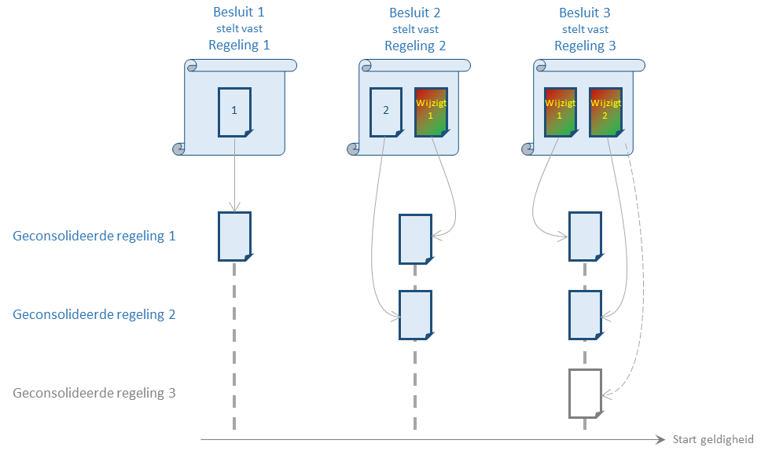

Besluit en regeling
Samenvatting
In het geïntegreerd proces van bekendmaken en consolideren wordt onderscheid gemaakt tussen een besluit en een regeling, waarbij STOP de volgende definities gebruikt:
regeling: een tekst (met eventuele afbeeldingen en andere multimedia-elementen) die juridische voorschriften van algemene strekking of beleidsregels bevat;
besluit: een tekst die de vaststelling of wijziging van (de geldigheid van) een regeling of informatieobject beschrijft. Met andere woorden: Een besluit beschrijft precies hoe een BG een nieuwe regeling vaststelt, wijzigingen op een regeling doorvoert of de inwerkingtreding van een regeling of regelingversie bepaalt.
Dat wijkt af van de juridische conventie, waarbij elk besluit in een regeling beschreven wordt en het bevoegd gezag als onderdeel van de besluitvorming de regeling vaststelling van die regeling betreft. STOP is daarmee niet in tegenspraak, maar gebruikt de termen besluit en regeling op een iets andere manier zodat de functie van de teksten binnen het proces duidelijk wordt.
Juridisch: besluiten en regelingen
Juridisch gezien is het besluit zelf niet tastbaar: "hetgeen een bevoegd gezag besloten heeft". Het besluit wordt vastgelegd in een juridische regeling, welke verschillende type bepalingen kan bevatten:
Wijzigingsbepalingen
Tekst (met eventuele afbeeldingen en andere multimedia elementen) die beschrijft hoe de regelgeving gewijzigd moet worden;
Zelfstandige bepalingen
Tekst (met eventuele afbeeldingen en andere multimedia elementen) die beschrijft wat de regelgeving is; hieronder vallen ook eventuele aanvullende voorschriften (zoals overgangsrecht);
Inwerkingstredingsbepalingen
Tekst die de geldigheid van de wijzigingen beschrijft, zoals de inwerkingtreding of intrekking van een regeling.
Deze vastlegging is niet het besluit, maar beschrijft het besluit. De beschrijving wordt in de juridisch conventie zelf ook weer een "regeling" genoemd. Als onderdeel van het nemen van een besluit stelt het bevoegd gezag de regeling vast: het bevoegd gezag stelt vast dat de regeling een goede beschrijving is van het besluit.
De wijzigingsbepalingen geven aan hoe de beschrijving van een eerder besluit aangepast moet worden om tot de gewenste voorschriften of beleidsregels te komen. Dit heet consolideren en wordt gedaan om de geldende regelgeving in integrale vorm te kunnen tonen. Het bestaat eruit de tekst die het initiële besluit beschrijft aan te passen conform de wijzigingsvoorschriften uit de latere besluiten. Omdat het doel is om tot de tekst van de geldende regelgeving te komen, is voor de teksten van de geconsolideerde regelingen niets van belang wat niet de inhoud of de geldigheid betreft (zoals de wijzigingsinstructies). Wat niet van belang is wordt weggelaten uit de geconsolideerde regeling, of wordt wel vermeld maar zonder inhoud.
Zie voor een voorbeeld van consolidatie en besluiten de consolidatie van de "Tijdelijke wet bestuurlijke maatregelen terrorismebestrijding" van het bekendgemaakte besluit "Wet van 10 februari 2017, ... terrorismebestrijding)").
Consolideren is niet altijd zinvol, maar wel altijd mogelijk: Als in het besluit geen zelfstandige bepalingen staan, levert consolideren een lege regeling op. Op een besluit zonder zelfstandige bepalingen kunnen de regels voor het bepalen van de tekst van de geconsolideerde regeling wel worden toegepast. Dit levert dan een lege regeling op: er staan geen voorschriften of beleidsregels in. In dat geval is er geen sprake van een nieuwe regeling en kan de consolidatie van de beschrijving van het besluit achterwege gelaten worden.
Als voorbeeld: stel dat een bevoegd gezag een besluit (1) heeft genomen met alleen zelfstandige bepalingen, d.w.z. alleen nieuwe voorschriften, daarna een besluit (2) met zelfstandige en wijzigingsbepalingen waarmee een overgangsbepaling wordt opgenomen en de voorschriften aangepast worden, en tot slot een besluit (3) met alleen wijzigingsbepalingen die de voorschriften uit het eerste besluit wijzigt en de overgangsbepaling uit het tweede besluit.

Het resultaat is dat er twee geconsolideerde regelingen ontstaan:
een met de voorschriften uit het eerste besluit die door het tweede en derde besluit gewijzigd zijn.
een met de overgangsbepaling uit het tweede besluit die door het derde besluit gewijzigd wordt.
Hoewel het derde besluit te consolideren is, leidt dat tot een regeling zonder voorschriften of beleidsregels.
STOP: besluiten en regelingen
Een van de doelstellingen van het geïntegreerd proces van bekendmaken en consolideren is om op elk moment te weten wat de geldende regelgeving is. Dat wordt beschreven door wat de juristen de geconsolideerde regelgeving noemen. Waar juridisch gezien de geldende regelgeving ontstaat door het samenspel van besluiten, gaat het proces in STOP ervan uit dat het bevoegd gezag begint met het beschrijven van wat de geldende regelgeving moet worden, en het besluitvormingsproces gebruikt om de regelgeving juridische werking te geven.
Dat houdt in dat de tekst van de beoogde geconsolideerde regeling al vroeg in het proces een rol speelt, zeker als er tegelijk nieuwe regelgeving-gerelateerde informatie ontstaat. In STOP is een model nodig om deze tekst te modelleren, los van de vorm die het heeft als het onderdeel is van de volledige tekst (inclusief uitgeschreven wijzigingsbepalingen) die het bevoegd gezag uiteindelijk vaststelt. In STOP wordt die tekst regeling genoemd:
(STOP)-regeling = (juridisch) inhoud van de geconsolideerde regeling zoals de tekst (met eventuele afbeeldingen en andere multimedia elementen) en gerelateerde informatieobjecten.
Wat in STOP met regeling wordt aangeduid is ook precies het gedeelte van de juridische regeling (dus van de vastgestelde beschrijving van het besluit) dat later via wijzigingsbepalingen wordt aangepast. In STOP bevat het model van een "geconsolideerde regeling" méér dan alleen de (STOP)-regeling: bij consolidatie wordt bijvoorbeeld geldigheidsinformatie toegevoegd die uit alle bekendgemaakte besluiten is afgeleid.
De beschrijving van het besluit is in STOP ook belangrijk: het besluit wordt uiteindelijk officieel bekendgemaakt. In de tekst daarvan zitten wel de uitgeschreven wijzigingsbepalingen en de onderdelen die bij consolidatie worden weggelaten. Daarom:
(STOP)-besluit = (juridisch) regeling.
Waarbij in een (STOP)-besluit in plaats van wijzigingsbepalingen in de juridische regeling, een artikel in het (STOP)-besluit is opgenomen dat zegt dat de regeling gewijzigd wordt, waarbij verwezen wordt naar een wijzigbijlage waarin de wijzigingen in renvooi staan. STOP gebruikt dus deze aankondiging van wijziging, de renvooi-wijziging en wit artikelen om (gewijzigde) regelgeving en geldigheidsregelingen op te nemen in het STOP besluit.
In de verdere modellering van STOP is er een groot verschil tussen (STOP)-regeling en (STOP)-besluit, ondanks de grote overeenkomst die er (juridisch) tussen de twee bestaat. Dat onderscheid zit in de verschillende rollen die beide in het proces spelen. Zo wordt alleen een (STOP) besluit bekendgemaakt, en wordt regelgeving-gerelateerde informatie uitsluitend aan een (STOP) regeling gekoppeld. Ook de manier waarop naar informatieobjecten verwezen wordt is anders in een (STOP) regeling dan in een (STOP) besluit.
Vanwege dat verschil wordt in STOP daarom niet het juridische jargon voor besluiten en regelingen gevolgd, maar wordt de naam gebruikt van wat erdoor beschreven wordt: een (STOP)-besluit beschrijft het besluit van een bevoegd gezag, een (STOP)-regeling bevat (de tekst van) regelgeving.
STOP: regeling is breder dan juridische regeling
In het algemeen wordt de juridische term regeling alleen gebruikt als het gaat om de vaststelling van voorschriften en wijzigingsbepalingen die artikelsgewijs in een tekst zijn opgesomd. Beleidsregels staan vaak in een tekst beschreven die wel een structuur kent (zoals hoofdstukken) maar waarvoor verder geen vormvereisten zijn. In wet- en regelgeving wordt zo'n tekst bijvoorbeeld een visie genoemd.
In STOP wordt met het begrip regeling elke tekstuele beschrijving van regels aangeduid, ongeacht het karakter van de regels of de manier waarop de teksten zijn gestructureerd. De standaard ondersteunt meerdere tekstmodellen zodat de verschillende juridische teksten op een passende manier opgeschreven kunnen worden. Het proces voor het vaststellen, wijzigen en consolideren daarvan is voor alle verschijningsvormen gelijk. Om dat te benadrukken hanteert STOP daarvoor één begrip.